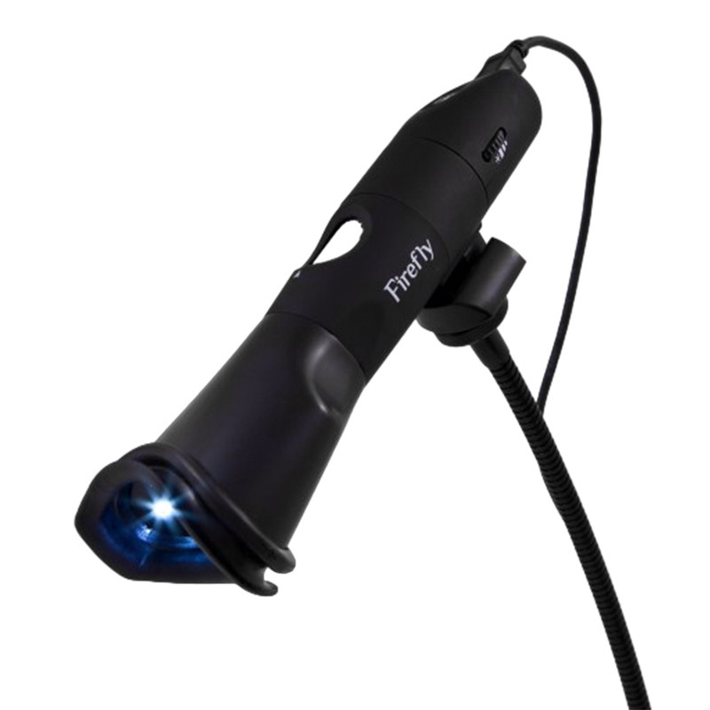
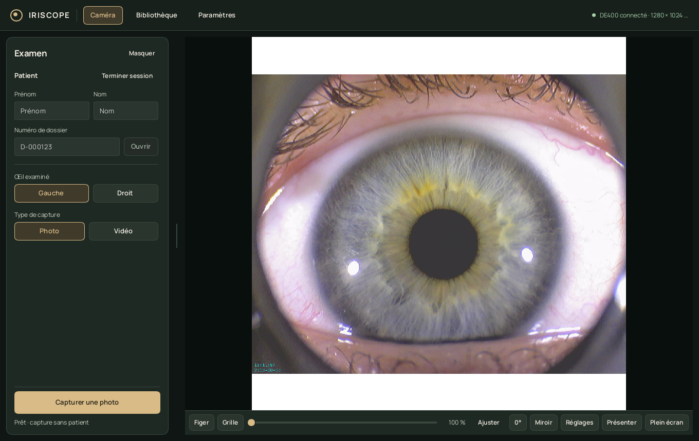
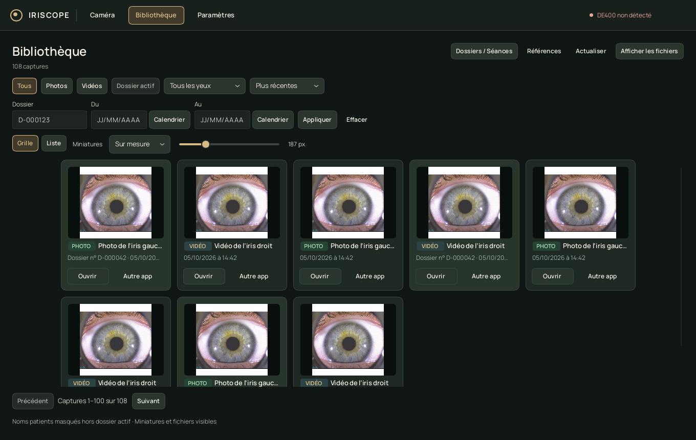
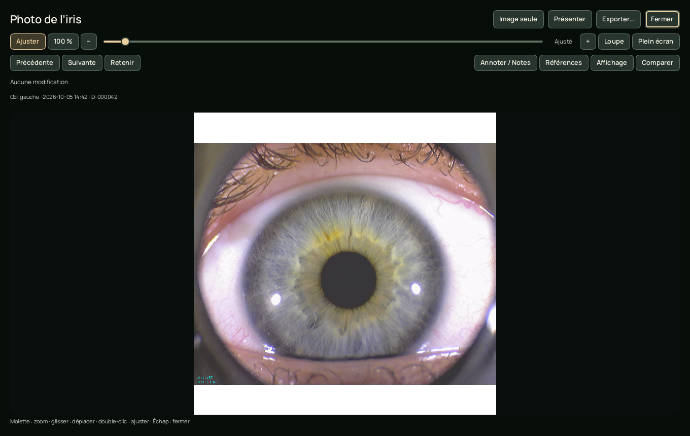

Le bon geste, au bon moment.
Photo ou vidéo, choix gauche/droite, réglages de la caméra et retour immédiat sur la dernière capture.
L’application pour vos images d’iris
Capturez des photos et vidéos, retrouvez vos séances et ajoutez vos observations. Une application simple, avec vos fichiers sur votre ordinateur.

FIREFLY DE400Iriscope numérique · USBFaites glisser horizontalement pour tourner. Les boutons permettent de zoomer.
Modèle DE400, reconstitué d’après les photos de Firefly Global.
01 Capturer simplement
02 Retrouver facilement
03 Observer précisément
L’application
Une interface sobre. Vos captures, vos notes et vos repères au même endroit.



Captures de l’interface avec des images de démonstration de Firefly Global.
Photo ou vidéo, choix gauche/droite, réglages de la caméra et retour immédiat sur la dernière capture.
Dossiers, séances et fichiers nommés automatiquement. Recherche, filtres et sauvegardes depuis l’application.
Zoom continu, rotation précise, annotations, comparaison et présentation en plein écran. Les originaux sont conservés.
Prise en main
Lancez Iriscope. L’application recherche la caméra et ouvre son flux. Autorisez l’accès à la caméra si votre système le demande.
Sélectionnez le dossier et l’œil, puis prenez une photo ou enregistrez une vidéo. Le bouton à l’écran reste disponible sur chaque plateforme.
Ouvrez la bibliothèque pour observer, annoter, comparer ou exporter. Vos fichiers restent enregistrés localement.
Iriscope 0.4.2
La release propose macOS Intel et Linux. Téléchargez l’installateur depuis GitHub Releases ; les versions suivantes se téléchargent et s’installent directement depuis les paramètres d’Iriscope.
PC Intel / AMD · x64
À venirEssai matériel encore nécessaire
Mac avec puce Apple
À venirEssai matériel encore nécessaire
Mac Intel · macOS 15 ou plus récent
IrisScope · IntelImage disque .dmg
PC Intel / AMD · x64
IrisScope · Linux x86_64Paquet .deb et archive portable
Les paquets sont actuellement distribués sans signature officielle. Le guide explique l’installation et la vérification du bouton physique. L’export MP4 nécessite FFmpeg ; l’enregistrement AVI reste disponible sans celui-ci.